flowchart LR A(Encoder) --> B(z) B(z) --> c(Decoder)
Variational Autoencoders
Notes on VAEs.
Story Time
Imagine an infinite wardrobe organised by “type” of clothing.
Shoes would be close together, but formal shoes might be closer to the suits and trainers closer to the sports gear. Shirts and t-shirts would be close together. Coats might be nearby; the shirt->coat vector applied to t-shirts might lead you to “invent” gilets.
This encapsulates the idea of using a lower dimensional (2D in this case) latent space to encode the representation of more complex objects.
We could sample from some of the empty spaces to invent new hybrids of clothing. This generative step is decoding the latent space.
1. Autoencoders
The idea of autoencoders (read: self-encoders) is that they learn to simplify the input then reconstruct it; the input and target output are the same.
- The encoder learns to compress high-dimensional input data into a lower dimensional representation called the embedding.
- The decoder takes an embedding and recreates a higher-dimensional image. This should be an accurate reconstruction of the input.
This can be used as a generative model because we can the sample and decode new points from the latent space to generate novel outputs. The goal of training an autoencoder is to learn a meaningful embedding \(z\).
This also makes autoencoders useful as denoising models, because the embedding should retain the salient information but “lose” the noise.
2. Building an Autoencoder
We will implement an autoencoder to learn lower-dimensional embeddings for the fashion MNIST data set.
Code
import numpy as np
import matplotlib.pyplot as plt
from scipy.stats import norm
import tensorflow as tf
from tensorflow.keras import (
layers,
models,
datasets,
callbacks,
losses,
optimizers,
metrics,
)
# Parameters
IMAGE_SIZE = 32
CHANNELS = 1
BATCH_SIZE = 100
BUFFER_SIZE = 1000
VALIDATION_SPLIT = 0.2
EMBEDDING_DIM = 2
EPOCHS = 32.1. Load and pre-process the data
Scale the pixel values and reshape the images.
Code
(x_train, y_train), (x_test, y_test) = datasets.fashion_mnist.load_data()
def preprocess(images):
images = images.astype("float32") / 255.0
images = np.pad(images, ((0, 0), (2, 2), (2, 2)), constant_values=0.0)
images = np.expand_dims(images, -1)
return images
x_train = preprocess(x_train)
x_test = preprocess(x_test)We can see an example from our training set:
Code
plt.imshow(x_train[0])
2.2. Build the Encoder
The encoder compresses the dimensionality on the input to a smaller embedding dimension.
Code
# Input
encoder_input = layers.Input(shape=(IMAGE_SIZE, IMAGE_SIZE, CHANNELS),name="encoder_input")
# Conv layers
x = layers.Conv2D(32, (3, 3), strides=2, activation="relu", padding="same")(encoder_input)
x = layers.Conv2D(64, (3, 3), strides=2, activation="relu", padding="same")(x)
x = layers.Conv2D(128, (3, 3), strides=2, activation="relu", padding="same")(x)
pre_flatten_shape = tf.keras.backend.int_shape(x)[1:] # Used by the decoder later
# Output
x = layers.Flatten()(x)
encoder_output = layers.Dense(EMBEDDING_DIM, name="encoder_output")(x)
# Model
encoder = models.Model(encoder_input, encoder_output)
encoder.summary()Model: "model"
_________________________________________________________________
Layer (type) Output Shape Param #
=================================================================
encoder_input (InputLayer) [(None, 32, 32, 1)] 0
conv2d (Conv2D) (None, 16, 16, 32) 320
conv2d_1 (Conv2D) (None, 8, 8, 64) 18496
conv2d_2 (Conv2D) (None, 4, 4, 128) 73856
flatten (Flatten) (None, 2048) 0
encoder_output (Dense) (None, 2) 4098
=================================================================
Total params: 96770 (378.01 KB)
Trainable params: 96770 (378.01 KB)
Non-trainable params: 0 (0.00 Byte)
_________________________________________________________________2.3. Build the Decoder
The decoder reconstructs the original image from the embedding.
Convolutional Transpose Layers
In a standard convolutional layer, if we have stride=2 it will half the image size.
In a convolutional transpose layer, we are increasing the image size. The stride parameter determines the amount of zero padding to add between each pixel. A kernel is then applied to this “internally padded” image to expand the image size.
Code
# Input
decoder_input = layers.Input(shape=(EMBEDDING_DIM,),name="decoder_input")
# Reshape the input using the pre-flattening shape from the encoder
x = layers.Dense(np.prod(pre_flatten_shape))(decoder_input)
x = layers.Reshape(pre_flatten_shape)(x)
# Scale up the image back to its original size. These are the reverse of the conv layers applied in the encoder.
x = layers.Conv2DTranspose(128, (3, 3), strides=2, activation="relu", padding="same")(x)
x = layers.Conv2DTranspose(64, (3, 3), strides=2, activation="relu", padding="same")(x)
x = layers.Conv2DTranspose(32, (3, 3), strides=2, activation="relu", padding="same")(x)
# Output
decoder_output = layers.Conv2D(
CHANNELS,
(3, 3),
strides=1,
activation='sigmoid',
padding="same",
name="decoder_output",
)(x)
# Model
decoder = models.Model(decoder_input, decoder_output)
decoder.summary()Model: "model_1"
_________________________________________________________________
Layer (type) Output Shape Param #
=================================================================
decoder_input (InputLayer) [(None, 2)] 0
dense (Dense) (None, 2048) 6144
reshape (Reshape) (None, 4, 4, 128) 0
conv2d_transpose (Conv2DTr (None, 8, 8, 128) 147584
anspose)
conv2d_transpose_1 (Conv2D (None, 16, 16, 64) 73792
Transpose)
conv2d_transpose_2 (Conv2D (None, 32, 32, 32) 18464
Transpose)
decoder_output (Conv2D) (None, 32, 32, 1) 289
=================================================================
Total params: 246273 (962.00 KB)
Trainable params: 246273 (962.00 KB)
Non-trainable params: 0 (0.00 Byte)
_________________________________________________________________2.4. Build the Autoencoder
Combine the encoder and decoder into a single model.
Code
autoencoder = models.Model(encoder_input, decoder(encoder_output))
autoencoder.summary()Model: "model_2"
_________________________________________________________________
Layer (type) Output Shape Param #
=================================================================
encoder_input (InputLayer) [(None, 32, 32, 1)] 0
conv2d (Conv2D) (None, 16, 16, 32) 320
conv2d_1 (Conv2D) (None, 8, 8, 64) 18496
conv2d_2 (Conv2D) (None, 4, 4, 128) 73856
flatten (Flatten) (None, 2048) 0
encoder_output (Dense) (None, 2) 4098
model_1 (Functional) (None, 32, 32, 1) 246273
=================================================================
Total params: 343043 (1.31 MB)
Trainable params: 343043 (1.31 MB)
Non-trainable params: 0 (0.00 Byte)
_________________________________________________________________2.5. Train the Autoencoder
The autoencoder is trained with the source images as both input and target output.
The loss function is usually chosen as either RMSE or binary cross-entropy between pixels of original image vs reconstruction.
Code
autoencoder.compile(optimizer="adam", loss="binary_crossentropy")
autoencoder.fit(
x_train,
x_train,
epochs=EPOCHS,
batch_size=BATCH_SIZE,
shuffle=True,
validation_data=(x_test, x_test)
)Epoch 1/3
600/600 [==============================] - 35s 58ms/step - loss: 0.2910 - val_loss: 0.2610
Epoch 2/3
600/600 [==============================] - 36s 60ms/step - loss: 0.2569 - val_loss: 0.2561
Epoch 3/3
600/600 [==============================] - 34s 57ms/step - loss: 0.2536 - val_loss: 0.2540<keras.src.callbacks.History at 0x156e4a310>3. Analysing the Autoencoder
We can use our trained autoencoder to:
- Reconstruct images
- Analyse embeddings
- Generate new images
3.1. Reconstruct Images Using the Autoencoder
Reconstruct a sample of test images using the autoencoder.
The reconstruction isn’t perfect; some information is lost when reducing down to just 2 dimensions. But it does a surprisingly good job of compressing 32x32 pixel values into just 2 embedding values.
Code
NUM_IMAGES_TO_RECONSTRUCT = 5000
example_images = x_test[:NUM_IMAGES_TO_RECONSTRUCT]
example_labels = y_test[:NUM_IMAGES_TO_RECONSTRUCT]
predictions = autoencoder.predict(example_images) 7/157 [>.............................] - ETA: 1s 157/157 [==============================] - 1s 8ms/stepOriginal images:
Code
def plot_sample_images(images, n=10, size=(20, 3), cmap="gray_r"):
plt.figure(figsize=size)
for i in range(n):
_ = plt.subplot(1, n, i + 1)
plt.imshow(images[i].astype("float32"), cmap=cmap)
plt.axis("off")
plt.show()
plot_sample_images(example_images)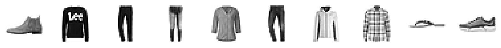
Reconstructed images:
Code
plot_sample_images(predictions)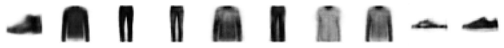
3.2. Analyse the Embeddings
Each of the images above has been encoded as a 2-dimensional embedding.
We can look at these embeddings to gain some insight into how the autoencoder works.
The embedding vectors for our sample images above:
Code
# Encode the example images
embeddings = encoder.predict(example_images)
print(embeddings[:10])102/157 [==================>...........] - ETA: 0s157/157 [==============================] - 0s 2ms/step
[[ 2.2441912 -2.711683 ]
[ 6.1558456 6.0202003 ]
[-3.787192 7.3368516 ]
[-2.5938551 4.2098355 ]
[ 3.8645594 2.7229536 ]
[-2.0130231 6.0485506 ]
[ 1.2749226 2.1347647 ]
[ 2.8239484 2.898773 ]
[-0.48542604 -1.0869933 ]
[ 0.30643728 -2.6099105 ]]We can plot the 2D latent space, colouring each point by its label. This shows how similar items are clustered together in latent space.
This is impressive! Remember, we never showed the model the labels when training, so it has learned to cluster images that look alike.
Code
# Colour the embeddings by their label
example_labels = y_test[:NUM_IMAGES_TO_RECONSTRUCT]
# Plot the latent space
figsize = 8
plt.figure(figsize=(figsize, figsize))
plt.scatter(
embeddings[:, 0],
embeddings[:, 1],
cmap="rainbow",
c=example_labels,
alpha=0.6,
s=3,
)
plt.colorbar()
plt.show()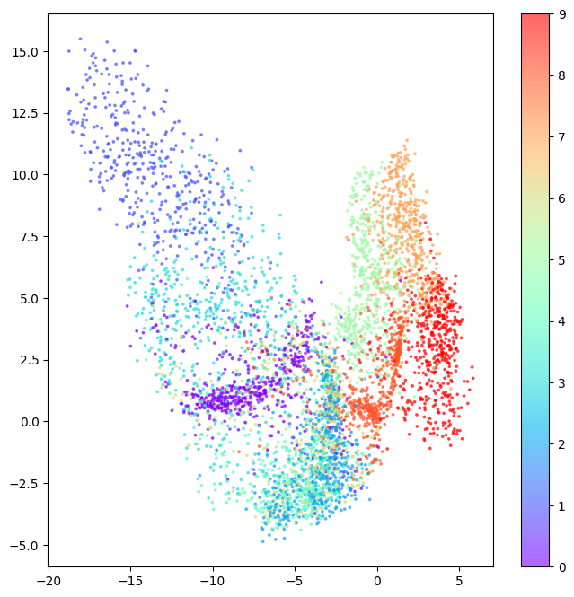
3.3. Generating New Images
We can sample from the latent space and decode these sampled points to generate new images.
First we sample some random points in the latent space:
Code
# Get the range of existing embedding values so we can sample sensible points within the latent space.
embedding_min = np.min(embeddings, axis=0)
embedding_max = np.max(embeddings, axis=0)
# Sample some points
grid_width = 6
grid_height = 3
sample = np.random.uniform(
embedding_min, embedding_max, size=(grid_width * grid_height, EMBEDDING_DIM)
)
print(sample)[[ 1.47862929 9.28394749]
[-3.19389344 -3.04713146]
[-0.57161452 -0.35644389]
[10.97632621 -2.12482484]
[ 4.05160668 9.04420005]
[ 9.50105167 5.71270956]
[ 3.24765456 4.95969011]
[-3.68217634 4.52120851]
[-1.7067196 5.87696959]
[ 5.99883565 -2.11597183]
[ 1.84553131 6.04266323]
[ 0.15552252 1.98655625]
[ 3.55479856 2.35587959]
[-0.32278762 6.07537408]
[ 8.98977414 -1.15893539]
[ 2.1476981 4.97819188]
[-2.0896675 3.9166368 ]
[ 6.49229371 -4.75611412]]We can then decode these sampled points.
Code
# Decode the sampled points
reconstructions = decoder.predict(sample)1/1 [==============================] - 0s 59ms/stepCode
figsize = 8
plt.figure(figsize=(figsize, figsize))
# Plot the latent space and overlay the positions of the sampled points
plt.scatter(embeddings[:, 0], embeddings[:, 1], c="black", alpha=0.5, s=2)
plt.scatter(sample[:, 0], sample[:, 1], c="#00B0F0", alpha=1, s=40)
plt.show()
# Plot a grid of the reconstructed images which decode those sampled points
fig = plt.figure(figsize=(figsize, grid_height * 2))
fig.subplots_adjust(hspace=0.4, wspace=0.4)
for i in range(grid_width * grid_height):
ax = fig.add_subplot(grid_height, grid_width, i + 1)
ax.axis("off")
ax.text(
0.5,
-0.35,
str(np.round(sample[i, :], 1)),
fontsize=10,
ha="center",
transform=ax.transAxes,
)
ax.imshow(reconstructions[i, :, :], cmap="Greys")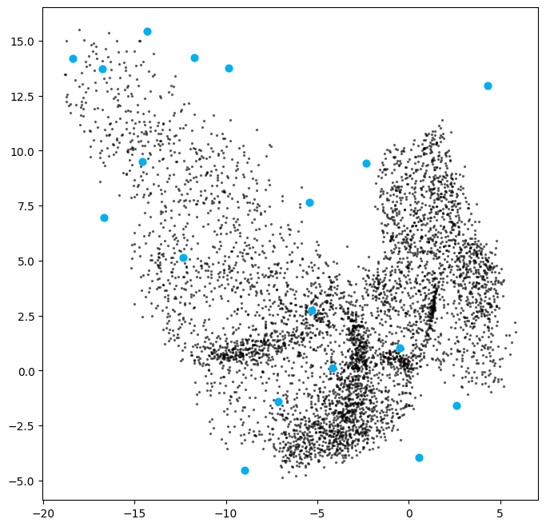
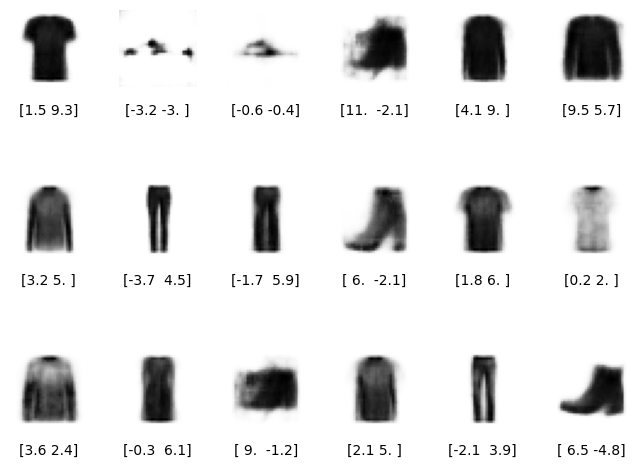
Now let’s see what happens when we regularly sample the latent space.
Code
# Colour the embeddings by their label (clothing type - see table)
figsize = 12
grid_size = 15
plt.figure(figsize=(figsize, figsize))
plt.scatter(
embeddings[:, 0],
embeddings[:, 1],
cmap="rainbow",
c=example_labels,
alpha=0.8,
s=300,
)
plt.colorbar()
x = np.linspace(min(embeddings[:, 0]), max(embeddings[:, 0]), grid_size)
y = np.linspace(max(embeddings[:, 1]), min(embeddings[:, 1]), grid_size)
xv, yv = np.meshgrid(x, y)
xv = xv.flatten()
yv = yv.flatten()
grid = np.array(list(zip(xv, yv)))
reconstructions = decoder.predict(grid)
# plt.scatter(grid[:, 0], grid[:, 1], c="black", alpha=1, s=10)
plt.show()
fig = plt.figure(figsize=(figsize, figsize))
fig.subplots_adjust(hspace=0.4, wspace=0.4)
for i in range(grid_size**2):
ax = fig.add_subplot(grid_size, grid_size, i + 1)
ax.axis("off")
ax.imshow(reconstructions[i, :, :], cmap="Greys")8/8 [==============================] - 0s 9ms/step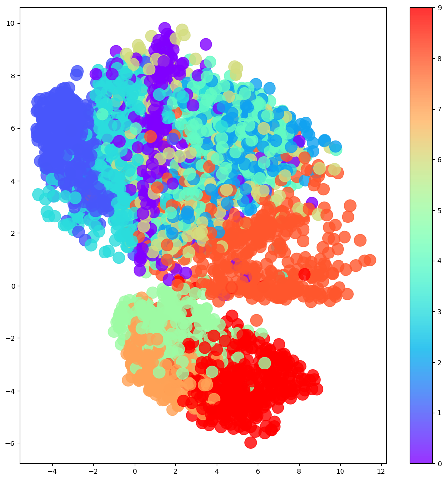
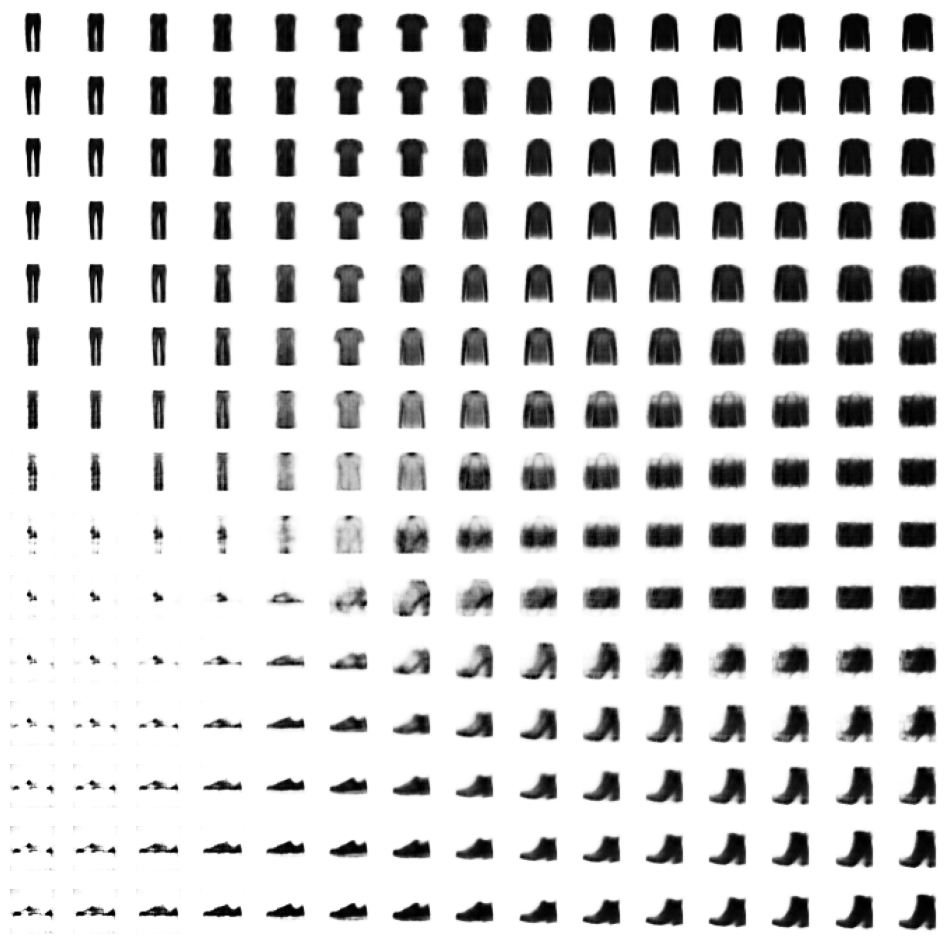
3.4. The Limitations of Autoencoders
The latent space exploration above yields some interesting insights into “regular” autoencoders that motivate the use of variational autoencoders to address these shortcomings.
- Different categories occupy varying amounts of area in latent space.
- The latent space distribution is not symmetrical or bounded.
- There are gaps in the latent space.
This makes it difficult for us to sample from this latent space effectively. We could sample a “gap” and get a nonsensical image. If a category (say, trousers) occupies a larger area in latent space, we are more likely to generate images of trousers than of categories which occupy a small area (say, shoes).
4. Variational Autoencoders
Story Time
If we revisit our wardrobe, rather than assigning each item to a specific location, let’s assign it to a general region of the wardrobe.
And let’s also insist that this region should be as close to the centre of the wardrobe as possible, otherwise we are penalised. This should yield a more uniform latent space.
This is the idea behind variational autoencoders (VAE).
4.1. The Encoder
In a standard autoencoder, each image is mapped directly to one point in the latent space.
In a variational autoencoder, each image is mapped to a multivariate Normal distribution around a point in the latent space. Variational autoencoders assume their is no correlation between latent space dimensions.
So we will typically use isotropic Normal distributions, meaning the covariance matrix is diagonal so the distribution is independent in each dimension. The encoder only needs to map each input to a mean vector and a variance vector; it does not need to worry about covariances.
In practice we choose to map to log variances because this can be any value in the range \((-\infty, \infty)\) which gives a smoother value to learn rather than variances whihc are positive.
In summary, the encoder maps \(image \rightarrow (z_{mean}, z_{log\_var})\)
We can then sample a point \(z\) from this distribution using:
\[ z = z_{mean} + z_{sigma} * epsilon \]
where: \[ z_{sigma} = e^{z_{log\_var} * 0.5} \] \[ epsilon \sim \mathcal{N}(0, I) \]
4.2. The Decoder
This is identical to the standard autoencoder.
4.3. The Variational Autoencoder
Putting these together, we get the overall architecture:
flowchart LR A[Encoder] --> B1(z_mean) A[Encoder] --> B2(z_log_var) B1(z_mean) --> C[sample] B2(z_log_var) --> C[sample] C[sample] --> D(z) D(z) --> E[Decoder]
Why does this change to the encoder help?
In the standard autoencoder, there is no requirement for the latent space to be continuous. So we could sample a point, say, \((1, 2)\) and decode it to a well-formed image. But there is no guarantee that a point next to it \((1.1, 2.1)\) would look similar or even be intelligible.
The “variational” part of the VAE addresses this problem. We now sample from an area around z_mean, so the decoder must ensure that all points in that region produce similar images to keep the reconstruction loss small.
4.4. Reparameterization Trick
Rather than sample directly from a Normal distribution parameterised by z_mean and z_log_var, we can sample epsilon from a standard Normal distribution and manually adjust the sample to correct its mean and variance.
This means gradients can backpropagate freely through the layer. The randomness in the layer is all encapsulated in epsilon, so the partial derivative of the layer output w.r.t. the layer input is deterministic, making backpropagation possible.
4.5 Loss Function
The loss function of the standard autoencoder was the reconstruction loss between original image and its decoded version.
For VAEs, we add an additional term which encourages points to have small mean and variance by penalising z_mean and z_log_var variables that differ significantly from 0.
This is the Kullback-Leibler (KL) divergence. It measures how much one probability distribution differs from another. We use it to measure how much our Normal distribution, with parameters z_mean and z_log_var, differs from a standard Normal distribution.
For this special case of KL divergence between our Normal distribution and a standard Normal, the closed form solution is: \[ D_{KL}[\mathcal{N}(\mu, \sigma) || \mathcal{N}(0, 1)] = -\frac{1}{2} \sum (1 + \log(\sigma ^2) - \mu ^2 - \sigma ^ 2) \]
So using our variables, we can describe this in code as:
kl_loss = -0.5 * sum(1 + z_log_var - z_mean ** 2 - exp(z_log_var))This loss is minimised when z_mean=0 and z_log_var=0, i.e. it encourages our distrubution towards a stand Normal distribution, thus using the space around the origin symmetrically and efficently with few gaps.
The original paper simply summed the reconstruction_loss and the kl_loss. A variant of this includes a hyperparameter \(\beta\) to vary the weight of the KL divergence term. This is called a “\(\beta-VAE\)”:
vae_loss = reconstruction_error + beta * kl_loss5. Building a Variational Autoencoder (VAE)
5.1. Sampling Layer
We need a sampling layer which allows us to sample \(z\) from the distribution defined by \(z_{mean}\) and \(z_{log\_var}\).
Code
class Sampling(layers.Layer):
def call(self, z_mean, z_log_var):
batch = tf.shape(z_mean)[0]
dim = tf.shape(z_mean)[1]
epsilon = tf.keras.backend.random_normal(shape=(batch, dim))
return z_mean + tf.exp(0.5 * z_log_var) * epsilon5.2. Encoder
The encoder incorporates the Sampling layer as the final step. This is what is passed to the decoder.
Code
# Encoder
encoder_input = layers.Input(
shape=(IMAGE_SIZE, IMAGE_SIZE, 1), name="encoder_input"
)
x = layers.Conv2D(32, (3, 3), strides=2, activation="relu", padding="same")(encoder_input)
x = layers.Conv2D(64, (3, 3), strides=2, activation="relu", padding="same")(x)
x = layers.Conv2D(128, (3, 3), strides=2, activation="relu", padding="same")(x)
shape_before_flattening = tf.keras.backend.int_shape(x)[1:] # the decoder will need this!
x = layers.Flatten()(x)
z_mean = layers.Dense(EMBEDDING_DIM, name="z_mean")(x)
z_log_var = layers.Dense(EMBEDDING_DIM, name="z_log_var")(x)
z = Sampling()(z_mean, z_log_var)
encoder = models.Model(encoder_input, [z_mean, z_log_var, z], name="encoder")
encoder.summary()Model: "encoder"
__________________________________________________________________________________________________
Layer (type) Output Shape Param # Connected to
==================================================================================================
encoder_input (InputLayer) [(None, 32, 32, 1)] 0 []
conv2d_3 (Conv2D) (None, 16, 16, 32) 320 ['encoder_input[0][0]']
conv2d_4 (Conv2D) (None, 8, 8, 64) 18496 ['conv2d_3[0][0]']
conv2d_5 (Conv2D) (None, 4, 4, 128) 73856 ['conv2d_4[0][0]']
flatten_1 (Flatten) (None, 2048) 0 ['conv2d_5[0][0]']
z_mean (Dense) (None, 2) 4098 ['flatten_1[0][0]']
z_log_var (Dense) (None, 2) 4098 ['flatten_1[0][0]']
sampling (Sampling) (None, 2) 0 ['z_mean[0][0]',
'z_log_var[0][0]']
==================================================================================================
Total params: 100868 (394.02 KB)
Trainable params: 100868 (394.02 KB)
Non-trainable params: 0 (0.00 Byte)
__________________________________________________________________________________________________5.3. Decoder
The decoder is the same as a standard autoencoder.
Code
# Decoder
decoder_input = layers.Input(shape=(EMBEDDING_DIM,), name="decoder_input")
x = layers.Dense(np.prod(shape_before_flattening))(decoder_input)
x = layers.Reshape(shape_before_flattening)(x)
x = layers.Conv2DTranspose(128, (3, 3), strides=2, activation="relu", padding="same")(x)
x = layers.Conv2DTranspose(64, (3, 3), strides=2, activation="relu", padding="same")(x)
x = layers.Conv2DTranspose(32, (3, 3), strides=2, activation="relu", padding="same")(x)
decoder_output = layers.Conv2D(1, (3, 3), strides=1, activation="sigmoid", padding="same", name="decoder_output")(x)
decoder = models.Model(decoder_input, decoder_output)
decoder.summary()Model: "model_3"
_________________________________________________________________
Layer (type) Output Shape Param #
=================================================================
decoder_input (InputLayer) [(None, 2)] 0
dense_1 (Dense) (None, 2048) 6144
reshape_1 (Reshape) (None, 4, 4, 128) 0
conv2d_transpose_3 (Conv2D (None, 8, 8, 128) 147584
Transpose)
conv2d_transpose_4 (Conv2D (None, 16, 16, 64) 73792
Transpose)
conv2d_transpose_5 (Conv2D (None, 32, 32, 32) 18464
Transpose)
decoder_output (Conv2D) (None, 32, 32, 1) 289
=================================================================
Total params: 246273 (962.00 KB)
Trainable params: 246273 (962.00 KB)
Non-trainable params: 0 (0.00 Byte)
_________________________________________________________________5.4. Autoencoder
Putting the encoder and decoder together.
Code
EPOCHS = 5
BETA = 500Code
class VAE(models.Model):
def __init__(self, encoder, decoder, **kwargs):
super(VAE, self).__init__(**kwargs)
self.encoder = encoder
self.decoder = decoder
self.total_loss_tracker = metrics.Mean(name="total_loss")
self.reconstruction_loss_tracker = metrics.Mean(name="reconstruction_loss")
self.kl_loss_tracker = metrics.Mean(name="kl_loss")
@property
def metrics(self):
return [
self.total_loss_tracker,
self.reconstruction_loss_tracker,
self.kl_loss_tracker,
]
def call(self, inputs):
"""Call the model on a particular input."""
z_mean, z_log_var, z = encoder(inputs)
reconstruction = decoder(z)
return z_mean, z_log_var, reconstruction
def train_step(self, data):
"""Step run during training."""
with tf.GradientTape() as tape:
z_mean, z_log_var, reconstruction = self(data)
reconstruction_loss = tf.reduce_mean(
BETA * losses.binary_crossentropy(data, reconstruction, axis=(1, 2, 3))
)
kl_loss = tf.reduce_mean(
tf.reduce_sum(-0.5 * (1 + z_log_var - tf.square(z_mean) - tf.exp(z_log_var)), axis=1)
)
total_loss = reconstruction_loss + kl_loss
grads = tape.gradient(total_loss, self.trainable_weights)
self.optimizer.apply_gradients(zip(grads, self.trainable_weights))
self.total_loss_tracker.update_state(total_loss)
self.reconstruction_loss_tracker.update_state(reconstruction_loss)
self.kl_loss_tracker.update_state(kl_loss)
return {m.name: m.result() for m in self.metrics}
def test_step(self, data):
"""Step run during validation."""
if isinstance(data, tuple):
data = data[0]
z_mean, z_log_var, reconstruction = self(data)
reconstruction_loss = tf.reduce_mean(
BETA * losses.binary_crossentropy(data, reconstruction, axis=(1, 2, 3))
)
kl_loss = tf.reduce_mean(
tf.reduce_sum(
-0.5 * (1 + z_log_var - tf.square(z_mean) - tf.exp(z_log_var)),
axis=1,
)
)
total_loss = reconstruction_loss + kl_loss
return {
"loss": total_loss,
"reconstruction_loss": reconstruction_loss,
"kl_loss": kl_loss,
}Instantiate the VAE model and compile it.
Code
vae = VAE(encoder, decoder)
# optimizer = optimizers.Adam(learning_rate=0.0005)
optimizer = tf.keras.optimizers.legacy.Adam(learning_rate=0.0005)
vae.compile(optimizer=optimizer)5.5. Training
Train the VAE as before.
Code
vae.fit(
x_train,
epochs=EPOCHS,
batch_size=BATCH_SIZE,
shuffle=True,
validation_data=(x_test, x_test),
)Epoch 1/5
600/600 [==============================] - 37s 61ms/step - total_loss: 160.4693 - reconstruction_loss: 155.9913 - kl_loss: 4.4779 - val_loss: 141.2442 - val_reconstruction_loss: 136.1877 - val_kl_loss: 5.0565
Epoch 2/5
600/600 [==============================] - 34s 57ms/step - total_loss: 135.9397 - reconstruction_loss: 130.9409 - kl_loss: 4.9988 - val_loss: 138.5623 - val_reconstruction_loss: 133.5856 - val_kl_loss: 4.9767
Epoch 3/5
600/600 [==============================] - 34s 56ms/step - total_loss: 134.3719 - reconstruction_loss: 129.3381 - kl_loss: 5.0338 - val_loss: 137.1351 - val_reconstruction_loss: 132.1540 - val_kl_loss: 4.9811
Epoch 4/5
600/600 [==============================] - 34s 56ms/step - total_loss: 133.4455 - reconstruction_loss: 128.3819 - kl_loss: 5.0637 - val_loss: 136.5461 - val_reconstruction_loss: 131.4780 - val_kl_loss: 5.0681
Epoch 5/5
600/600 [==============================] - 34s 57ms/step - total_loss: 132.7808 - reconstruction_loss: 127.6688 - kl_loss: 5.1120 - val_loss: 135.8917 - val_reconstruction_loss: 130.7375 - val_kl_loss: 5.1542<keras.src.callbacks.History at 0x2c59e9f10>6. Analysing the VAE
6.1. Reconstruct using the VAE
As before, we can eyeball the reconstructions from our model.
Code
# Select a subset of the test set
n_to_predict = 5000
example_images = x_test[:n_to_predict]
example_labels = y_test[:n_to_predict]
# Create autoencoder predictions and display
z_mean, z_log_var, reconstructions = vae.predict(example_images)
print("Example real clothing items")
plot_sample_images(example_images)
print("Reconstructions")
plot_sample_images(reconstructions) 42/157 [=======>......................] - ETA: 1s157/157 [==============================] - 1s 9ms/step
Example real clothing items
Reconstructions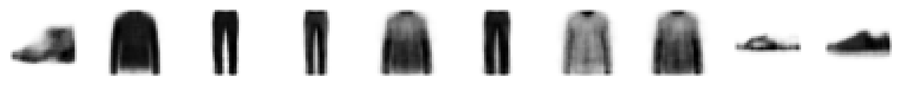
6.2. Generate New Images
We can sample and decode points in the latent space to observe how the model generates images. We note that:
- The latent space has more even coverage and does not stray to far from a standard Normal distribution. If this is not the case, we can vary the \(\beta\) value used to give more weight to the KL loss term.
- We do not see as many poorly formed images as we did when sampling a “gap” in a standard autoencoder.
Code
# Encode the example images
z_mean, z_var, z = encoder.predict(example_images)
# Sample some points in the latent space, from the standard normal distribution
grid_width, grid_height = (6, 3)
z_sample = np.random.normal(size=(grid_width * grid_height, 2))
# Decode the sampled points
reconstructions = decoder.predict(z_sample)
# Convert original embeddings and sampled embeddings to p-values
p = norm.cdf(z)
p_sample = norm.cdf(z_sample)
# Draw a plot of...
figsize = 8
plt.figure(figsize=(figsize, figsize))
# ... the original embeddings ...
plt.scatter(z[:, 0], z[:, 1], c="black", alpha=0.5, s=2)
# ... and the newly generated points in the latent space
plt.scatter(z_sample[:, 0], z_sample[:, 1], c="#00B0F0", alpha=1, s=40)
plt.show()
# Add underneath a grid of the decoded images
fig = plt.figure(figsize=(figsize, grid_height * 2))
fig.subplots_adjust(hspace=0.4, wspace=0.4)
for i in range(grid_width * grid_height):
ax = fig.add_subplot(grid_height, grid_width, i + 1)
ax.axis("off")
ax.text(
0.5,
-0.35,
str(np.round(z_sample[i, :], 1)),
fontsize=10,
ha="center",
transform=ax.transAxes,
)
ax.imshow(reconstructions[i, :, :], cmap="Greys")1/1 [==============================] - 0s 14ms/step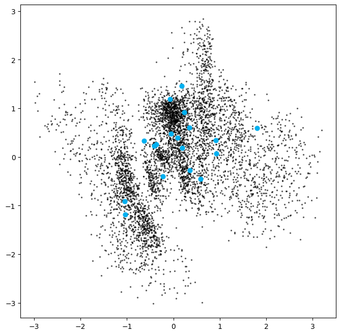
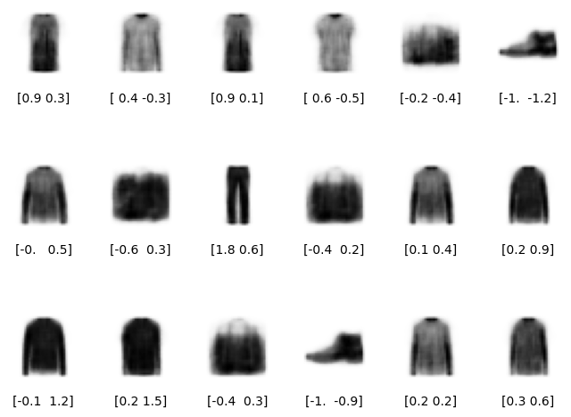
6.3. Analyse the Embeddings
The plots below show the latent space coloured by clothing type. The left plot shows this in terms of z-values and the right in terms of p-values.
The latent space is more continuous with fewer gaps, and different categories take similar amounts of space.
Code
# Colour the embeddings by their label (clothing type - see table)
figsize = 8
fig = plt.figure(figsize=(figsize * 2, figsize))
ax = fig.add_subplot(1, 2, 1)
plot_1 = ax.scatter(
z[:, 0], z[:, 1], cmap="rainbow", c=example_labels, alpha=0.8, s=3
)
plt.colorbar(plot_1)
ax = fig.add_subplot(1, 2, 2)
plot_2 = ax.scatter(
p[:, 0], p[:, 1], cmap="rainbow", c=example_labels, alpha=0.8, s=3
)
plt.show()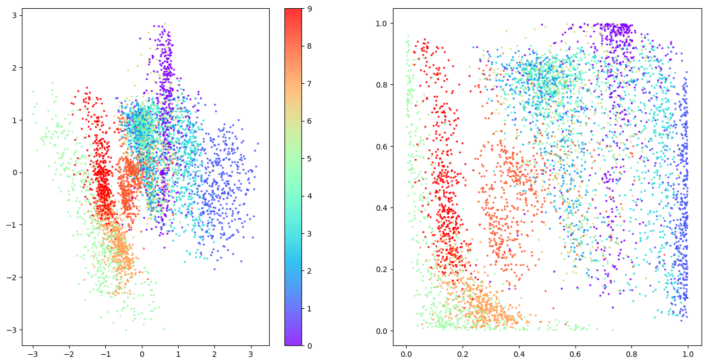
Next we see what happens when we sample from the latent space in a regular grid.
Code
# Colour the embeddings by their label (clothing type - see table)
figsize = 12
grid_size = 15
plt.figure(figsize=(figsize, figsize))
plt.scatter(
p[:, 0], p[:, 1], cmap="rainbow", c=example_labels, alpha=0.8, s=300
)
plt.colorbar()
x = norm.ppf(np.linspace(0, 1, grid_size))
y = norm.ppf(np.linspace(1, 0, grid_size))
xv, yv = np.meshgrid(x, y)
xv = xv.flatten()
yv = yv.flatten()
grid = np.array(list(zip(xv, yv)))
reconstructions = decoder.predict(grid)
# plt.scatter(grid[:, 0], grid[:, 1], c="black", alpha=1, s=10)
plt.show()
fig = plt.figure(figsize=(figsize, figsize))
fig.subplots_adjust(hspace=0.4, wspace=0.4)
for i in range(grid_size**2):
ax = fig.add_subplot(grid_size, grid_size, i + 1)
ax.axis("off")
ax.imshow(reconstructions[i, :, :], cmap="Greys")8/8 [==============================] - 0s 6ms/step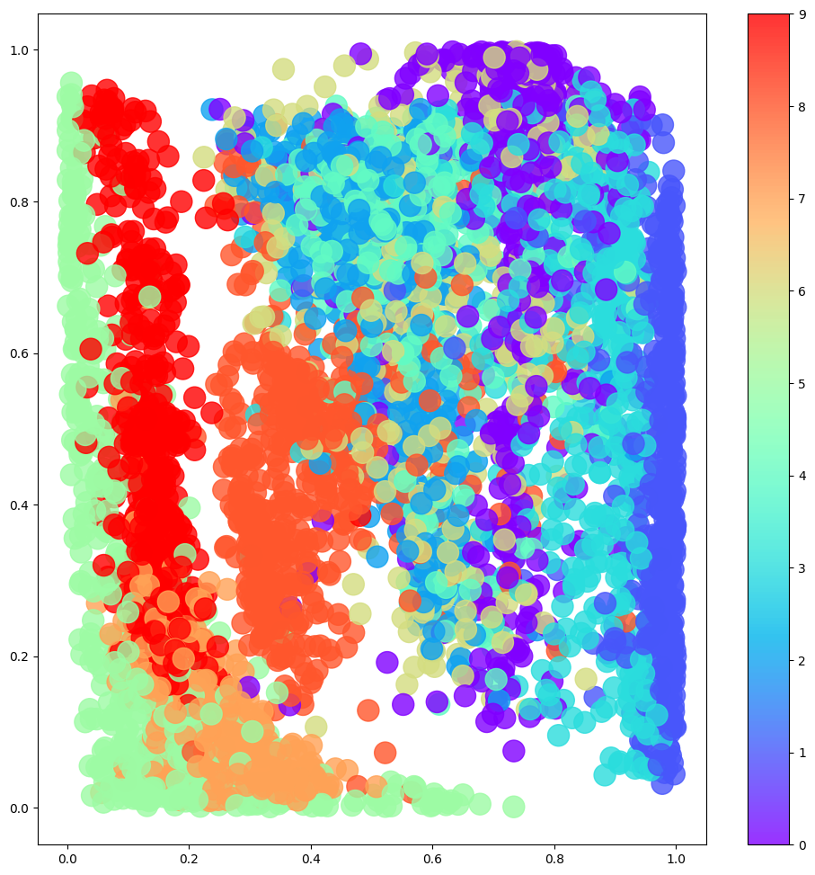
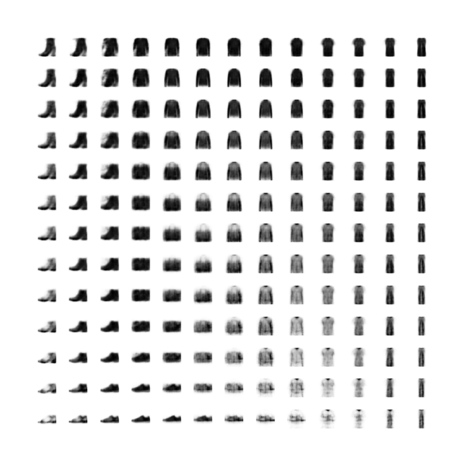
References
- Chapter 3 of Generative Deep Learning by David Foster.